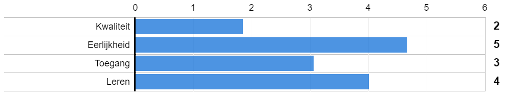

Er zijn vier verschillende uitgangspunten om aan de slag te gaan met culturele diversiteit in jouw werkomgeving.
Jouw profiel:
Scoor je hoog op Rechtvaardigheid?
Dan vind je dat de organisatie een maatschappelijke verantwoordelijkheid heeft om zich in te zetten voor culturele diversiteit. Het is belangrijk om discriminatie tegen te gaan en achterstandsgroepen in de samenleving vooruit te helpen. Je vindt dat ieder mens gelijke kansen moet krijgen en dat de organisatie een afspiegeling zou moeten zijn van de samenleving.
Wat is het effect van dit perspectief? Rechtvaardigheid is een nobel uitgangspunt. Vaak zie je bij een focus op rechtvaardigheid dat er uiteindelijk weinig binnen de organisatie verandert. Denk bijvoorbeeld aan de beste bedoelingen van missionarissen om mensen in ontwikkelingslanden ‘vooruit te helpen’. Onderzoek naar het effect van deze werkwijze laat echter zien dat dit geen efficiënte manier is om met mensen samen te werken.
Voor een omstreden voorbeeld van het ‘vooruit helpen’ van culturele minderheden, zie de documentaire ‘Curaçao’ (2010). In deze documentaire is te zien hoe een manager van de lokale Albert Heijn-vestiging zijn zwarte personeel en het witte management op een cursus stuurt met als motto Waarom wil een Antilliaan geen leiding geven?
In deze cursus manager probeert de manager de lokale werknemers de Nederlandse supermarktcultuur over te brengen door hun uit te leggen hoe zij handen dienen te schudden en mensen dienen aan te kijken.
Wat zijn de uitdagingen wanneer jouw vertrekpunt gericht is op Rechtvaardigheid?
1: Bij een focus op rechtvaardigheid in de organisatie wordt er vaak alsnog gedacht in termen van achterstand. Het voorbeeld van de Albert Heijn in Curaçao laat zien dat van culturele minderheden wordt verwacht dat zij zich aanpassen aan de dominante Westerse norm. Dit idee gaat voorbij aan de potentiële waarde die culturele verschillen in een werkomgeving kunnen bijdragen. Als organisaties ‘diversiteitbeleid’ blijven zien als Maatschappelijk Verantwoord Ondernemen en het slechts gebruiken als PR instrument, wordt de meerwaarde van culturele verschillen in de werkomgeving niet benut.
2: Het Rechtvaardigheid perspectief kan snel leiden tot weerstand in organisaties. Positieve discriminatie betekent dat achtergestelde groepen in de organisatie extra aandacht krijgen met het doel om feitelijk bestaande ongelijkheden op te heffen. Het idee van positieve discriminatie wordt bij zowel de culturele meerderheid als culturele minderheden meestal niet positief ontvangen. De culturele meerderheid kan het idee hebben achtergesteld te worden ten opzichte van de culturele minderheid doordat zij zelf geen kansen krijgen binnen de organisatie. Anderzijds kunnen culturele minderheden het gevoel krijgen dat zij niet op basis van hun capaciteiten zijn geselecteerd maar dat zij enkel op basis van hun culturele achtergrond kansen in de organisatie krijgen.
Zou je de culturele verschillen in jouw werkomgeving beter willen waarderen en benutten? Lees dan meer over het Kwaliteit, Toegang en Leren perspectief. Perspectieven Kwaliteit, Toegang, Leren.